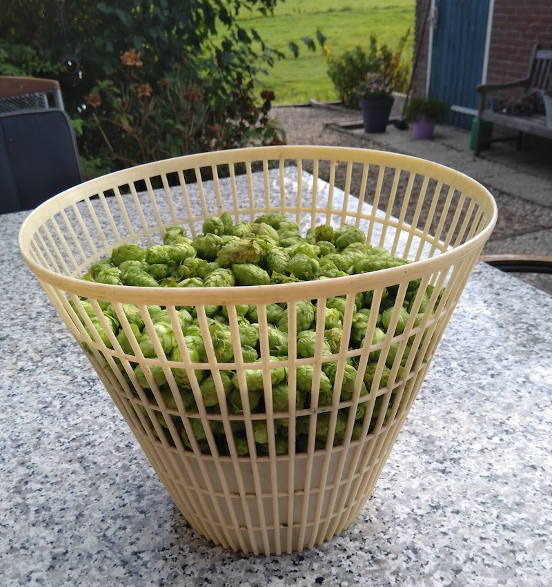
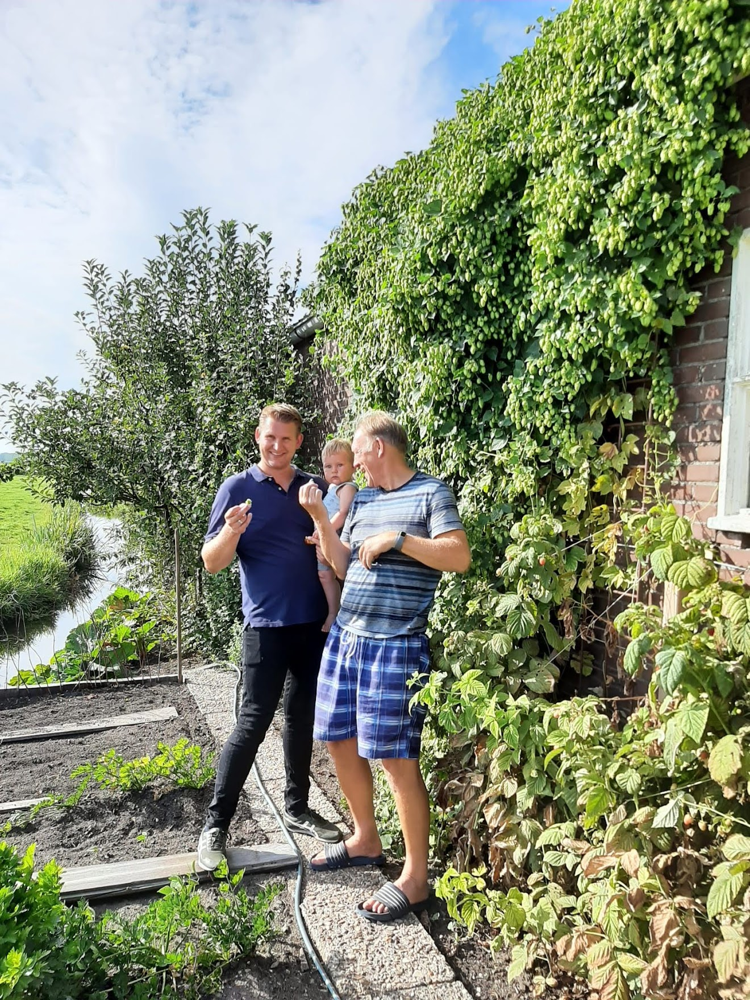

Brouwerij Wessie gaat brouwen met Nesser hop
Brouwerij Wessie gaat voor de bieren die de komende periode gebrouwen gaan worden ook gebruik maken van hop die in de regio Nes a/d Amstel is geteeld. Hiermee geeft de brouwerij ‘met karakter’ een extra accent aan haar ambachtelijke en circulaire brouwproces. Leverancier is medebrouwer Henk Boelrijk die twee jaar geleden is gestart met de teelt van hop. Het betreft de hopsoort ‘cascade’. Een populaire hopsoort die van origine afkomstig is uit Amerika. Deze hopsoort wordt vaak gebruikt in sterk gehopte ales en geeft een uniek citrus/bloemig en grapefruitkarakter.

Brouwerij Wessie zoekt immers continu naar innovaties om de smaak en het aroma van haar bieren verder te verbeteren. — Brouwer Henk Boelrijk
De oogst van deze hop is inmiddels begonnen en het droogproces is ingezet. Door de mooie zomer is de hop van uitstekende kwaliteit. Goedgekeurd door drie generaties Boelrijk. Er wordt geëxperimenteerd met diverse droogtechnieken van langzaam naar snel drogen. Brouwerij Wessie zoekt immers continu naar innovaties om de smaak en het aroma van haar bieren verder te verbeteren.
